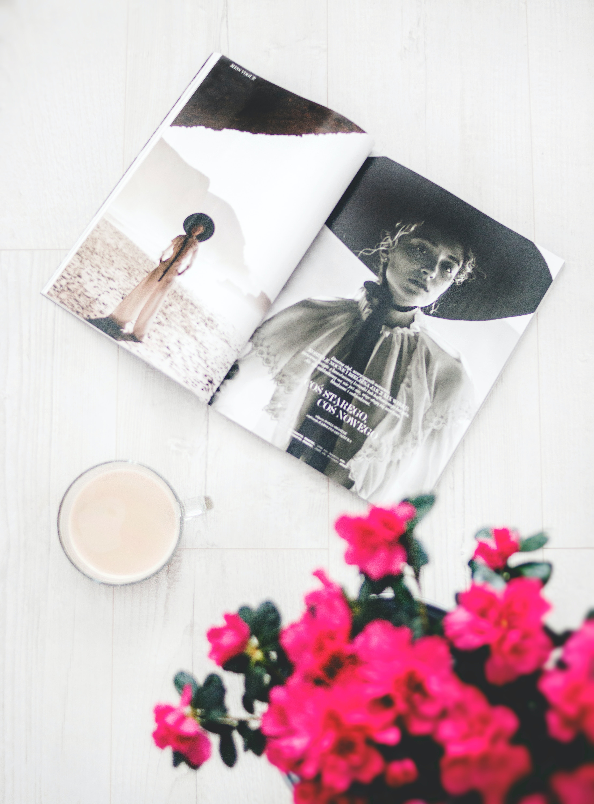

<ion-header>
  <ion-toolbar>
    <ion-title>User Name</ion-title>
    <ion-buttons slot="end">
      <ion-button [strong]="true">
        <ion-icon name="settings-outline"></ion-icon>
      </ion-button>
    </ion-buttons>
  </ion-toolbar>
</ion-header>
<ion-content [fullscreen]="true">
    <ion-card id="topCard">
      <div class="userInfos">
        <ion-item>
          <ion-avatar slot="start">
            
          </ion-avatar>
          <div class="infos">
            <ion-card color="light" class="infoCard">
              <p class="number">44</p>
              <p class="type">posts</p>
            </ion-card>
            <ion-card color="light" class="infoCard">
              <p class="number">2k</p>
              <p class="type">likes</p>
            </ion-card>
          </div>
        </ion-item>
      </div>
      <div class="myPosts">
        <h5>My posts</h5>
        <ion-grid [fixed]="true">
          <ion-row>
            <ion-col>
              
            </ion-col>
            <ion-col>
              
            </ion-col>
            
          </ion-row>
        </ion-grid>
        <ion-grid [fixed]="true">
          <ion-row>
            <ion-col>
              
            </ion-col>
            <ion-col>
              
            </ion-col>
            
          </ion-row>
        </ion-grid>
      </div>
     
    
      
    </ion-card>

  <ion-fab slot="fixed" vertical="bottom" horizontal="end">
    <ion-fab-button (click)="onClick()">
      <ion-icon name="add-outline"></ion-icon>
    </ion-fab-button>
    
  </ion-fab>
</ion-content>
